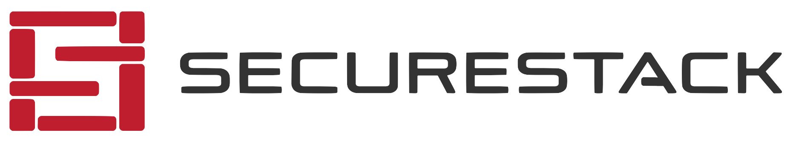

:office: 16 Nexus Way, Southport, QLD 4213, AUSTRALIA
:flags: Australian owned :flags: Private company
:small_blue_diamond: Visit site
SecureStack is a software supply chain security SaaS-based platform. SecureStack was founded in 2017 and is headquartered on the Gold Coast. Our comprehensive application security platform automates security for our customers source code, cloud resources and web endpoints with an easy to use SaaS platform. In addition to providing automated security tooling, we also provide our customers real-time continuous compliance, evidence collection, and the world’s most comprehensive and useful software bill of materials (SBOM). We help customers building in the cloud, but we also have an agent that extends the power of our SaaS platform into the on-premise and protected environments.
Australian organizations are sick of managing ten different solutions to address their application and cloud security requirements. SecureStack integrates multiple different security tools into one platform: Software Composition Analysis (SCA), Cloud Security Posture Managment (CSPM), web vulnerability, secret scanning and container scanning. All of these tools are integrated together into one cohesive vulnerability management platform. Our platform integrates with the tools your teams are already using like GitHub, GitLab, Bitbucket, Jira, Azure DevOps, Slack and more. And best of all SecureStack delivers all of this power via our SaaS platform, our CLI agent, or directly in our customers CI/CD pipelines.
Our comprehensive Application Security platform ticks all the boxes: source code, web assets and cloud stack. One platform, one dashboard and one subscription.
SecureStack makes it super easy to implement a successful SBOM program by automating the collection of data required to build SBOMs. Verify that your applications are secure by design for your partners, vendors, government and compliance bodies. We handle the whole end-to-end SBOM process with our patented “SBOM Lifecycle”. The end result is you get SBOMs that provide real business value without having to spend weeks inspecting source code.
SecureStack continuously analyzes our customers running web applications, source code, CI/CD processes, and cloud resources to make sure they are meeting their compliance goals. Our platform collects the evidence and provides it to your vendors, partners or compliance solutions like Vanta, Drata, etc.